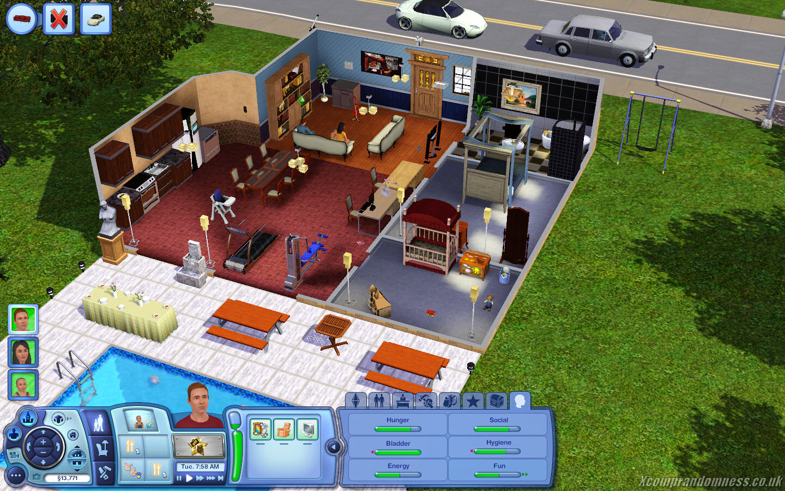
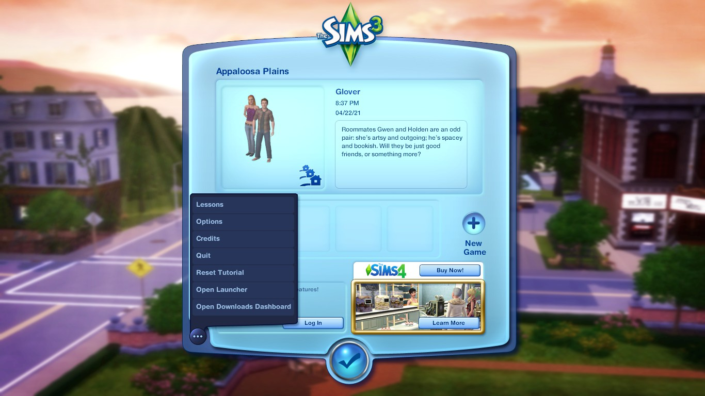
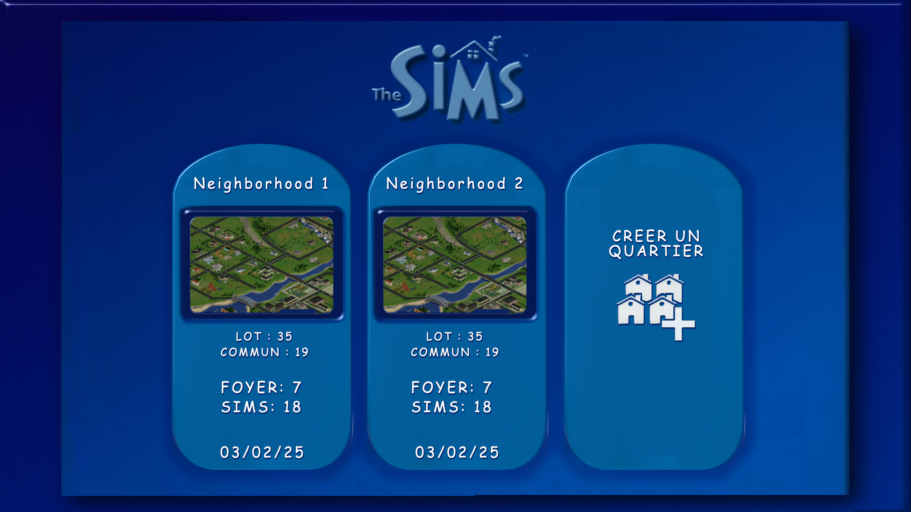
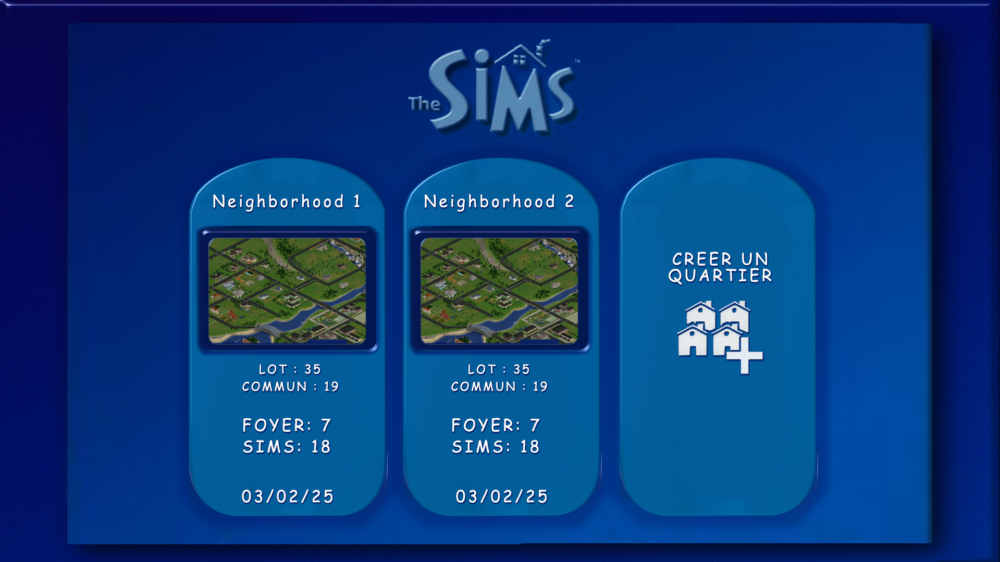
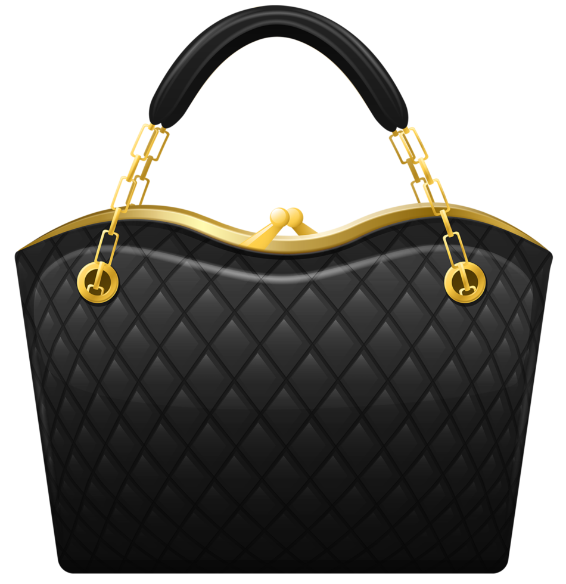
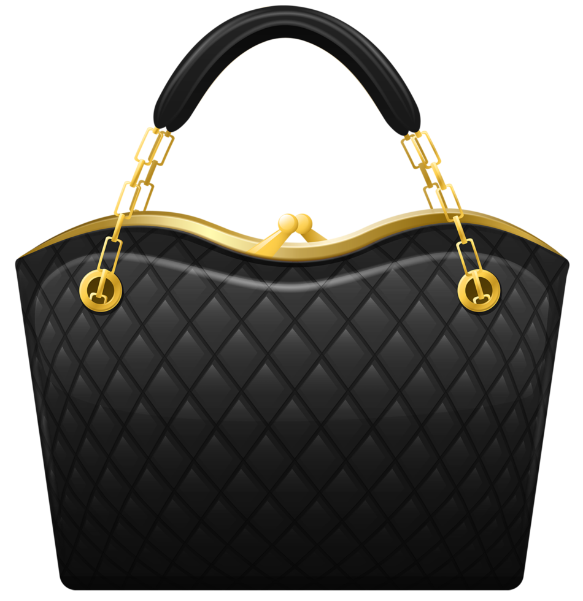

Em fevereiro de 2000, Will Wright apresentou ao mundo algo revolucionário: um jogo onde não havia
missões a cumprir, vilões a derrotar ou fases a passar.
Apenas vida. The Sims nasceu como um
experimento ousado que desafiava tudo o que conhecíamos sobre videogames.
O que começou como uma ideia inspirada em arquitetura e dinâmicas sociais se transformou na franquia
de PC mais vendida de todos os tempos.
Mas os números não contam a história completa. The Sims se
tornou um fenômeno cultural porque tocou algo profundo em nós: o desejo de criar, experimentar e viver
vidas diferentes.
Quantas tardes passamos construindo a casa perfeita? Quantas histórias criamos, desde romances épicos até
dramas familiares? Quantas vezes removemos a escada da piscina (sim, todos fizemos isso)? The Sims não era
apenas um jogo - era um playground para nossa imaginação, um lugar onde podíamos ser arquitetos,
contadores de histórias e diretores de nossas próprias novelas virtuais.
Ao longo de 24 anos e quatro gerações principais, a franquia evoluiu junto com seus jogadores. Vimos gráficos 2D se
transformarem em mundos 3D vibrantes. Testemunhamos a introdução de genética, emoções complexas e mundos abertos.
Mas a essência permaneceu: a liberdade de criar e viver histórias únicas.
Para muitos de nós, The Sims foi mais do que entretenimento. Foi onde aprendemos sobre relacionamentos, responsabilidade
financeira (aquelas contas não se pagavam sozinhas!) e design de interiores. Foi onde fizemos amigos online, compartilhamos
criações e nos conectamos através de uma paixão comum.
The Sims marcou gerações - e continua criando memórias para milhões ao redor do mundo.
"The Sims não é sobre ganhar ou perder. É sobre
viver, criar e contar suas próprias histórias."
— Will Wright, Criador de The Sims
A revolução 3D chegou! The Sims 2 trouxe gráficos
completamente tridimensionais, permitindo rotação de câmera
e visualização de todos os ângulos. O jogo introduziu genética
hereditária, onde filhos herdam características físicas dos pais.
O sistema de aspirações e medos adicionou profundidade
psicológica aos Sims, enquanto o envelhecimento automático
criou narrativas geracionais emocionantes.
Principais Características:
- Gráficos 3D completos com câmera livre
- Sistema de genética hereditária
- Aspirações de vida e sistema de medos
- Envelhecimento automático (bebê até idoso)
- Memórias e histórias familiares
- Customização facial detalhada
- 8 pacotes de expansão
O mundo aberto chegou! Pela primeira vez, os
Sims podiam explorar toda a vizinhança sem
telas de carregamento. O sistema de traços de
personalidade substituiu as aspirações,
oferecendo combinações únicas de
características.
A customização atingiu novos patamares com o
Create-a-Style, permitindo modificar cores e
padrões de qualquer objeto. A vida na vizinhança
acontecia simultaneamente, com todos os Sims
vivendo suas vidas em tempo real.
Principais Características:
- Mundo aberto sem telas de carregamento
- Sistema de traços de personalidade
- Create-a-Style (customização total)
- Vizinhança viva em tempo real
- Carreiras interativas e oportunidades
- Desejos de vida de longo prazo
- 11 pacotes de expansão


A geração atual focou em emoções e multitarefa.
Os Sims agora experimentam estados
emocionais complexos que afetam suas
interações e habilidades. O Create-a-Sim foi
revolucionado com manipulação direta de
características faciais e corporais.
O jogo recebe atualizações constantes, com
mais de 15 pacotes de expansão, mantendo-se
relevante e em constante evolução. A
comunidade criativa prospera com a Galeria
integrada.
Principais Características:
- Sistema de emoções dinâmicas
- Multitarefa (conversar enquanto come, etc)
- Create-a-Sim com manipulação direta
- Modo construção intuitivo
- Galeria online integrada
- Atualizações e conteúdo constante
- 15+ pacotes de expansão e contando

Construção Livre
Construa a casa dos sonhos com
ferramentas intuitivas. Desde
mansões luxuosas até casas
aconchegantes, você tem controle
total sobre cada detalhe.


Criação de Personagens
Crie Sims únicos com
personalidades distintas.
Customize aparência, roupas,
traços de personalidade e
aspirações de vida.

Carreiras Diversas
Explore dezenas de carreiras,
desde astronauta até chef
renomado. Cada profissão oferece
desafios e recompensas únicas.

Relacionamentos Profundos
Forme amizades, encontre o amor
verdadeiro, case-se e construa
famílias. Cada relacionamento
conta uma história única.

Mundos Expansivos
Explore vizinhanças vibrantes, viaje
para destinos exóticos e descubra
segredos escondidos em cada
canto.

Customização Total
Personalize tudo, desde cores de
paredes até padrões de roupas.
Sua criatividade é o único limite.
Ao longo dos anos, alguns Sims se tornaram verdadeiras lendas na comunidade.
Conheça os personagens que marcaram gerações de jogadores.


 



 
